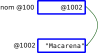
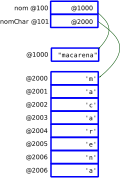
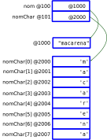
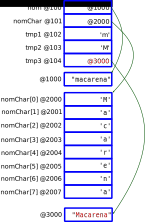
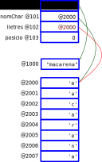
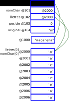
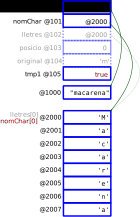

Mutabilitat
Els arrays incorporen una característica que no havíem vist fins ara en aquest curs: la mutabilitat.
Important
Concentra't, perquè aquest punt pot resultar una mica confós. Si et perds, torna a repassar els exemples. Pot ser-te molt útil fer els teus propis dibuixos a un paper.
Fins ara, quan una variable prenia un valor, aquest roman igual fins que la variable pren un altre valor. Sembla tan lògic, que costa d'entendre per on vaig, oi?
Què podria ser el contrari? Que una variable no canviés de valor però que aquest valor sí que canviés d'alguna manera? Això pot tenir sentit?
Deixa'm que m'expliqui
Immutabilitat dels enters
Considera el cas següent:
1int edat = 18;
2edat = edat + 1;
Podem canviar el valor de edat per 19, però no hem modificat el valor
18. Res especial, oi?
Immutabilitat dels Strings
A veure què passa amb els Strings
1String nom = "macarena";
2nom = Character.toUpperCase(nom.charAt(0)) + nom.substring(1);
El codi anterior corregeix el nom posant la inicial en majúscules. Podríem
entendre que simplement s'ha substituït la 'm' per 'M', però no ha
estat així.
Analitzem l'execució del fragment anterior pas a pas. Ho farem de manera simplificada així que només quedat amb la idea i no amb els detalls.
La primera línia declara i inicialitza un String:
String nom = "macarena";
Això, com sabem, són en realitat dues instruccions, declaració i inicialització:
1// String nom = "macarena";
2String nom;
3nom = "macarena";
Comencem per la declaració:
1 // String nom = "macarena";
2 String nom;
{kind=link}
Amb aquesta primera instrucció, tenim el nom de variable nom associat
a una posició de memòria (al gràfic li hem dit @100 però és inventat)
De moment no té cap valor assignat ja que no ha estat inicialitzada.
A continuació, té lloc la inicialització de nom amb el literal
"macarena".
1 // String nom = "macarena";
2String nom;
3nom = "macarena";
{kind=link}
El diagrama mostra la cadena "macarena" guardada a la posició
@1000. Com que els Strings no són primitius, sinó referències, el que
guardem a la posició @100 és en realitat la posició de memòria on es
guarda "macarena" i no el valor "macarena".
Ara, procedim a la inicialització de nom amb l'adreça de memòria on
està emmagatzemat el text "macarena".
La següent instrucció és una mica complexa:
1 String nom = "macarena";
2 nom = Character.toUpperCase(nom.charAt(0)) + nom.substring(1);
Per analitzar-la, la descomposarem també:
1 // nom = Character.toUpperCase(nom.charAt(0)) + nom.substring(1);
2 char tmp1 = nom.charAt(0);
3 char tmp2 = Character.toUpperCase(tmp1);
4 String tmp3 = nom.substring(1);
5 String tmp4 = tmp2 + tmp3;
6 nom = tmp4;
Fixa't que he posat uns noms no específics per les variables intermitges que segurament està creant el compilador de Java quan realitzi l'avaluació de l'expressió.
Resolem:
1 // nom = Character.toUpperCase(nom.charAt(0)) + nom.substring(1);
2 char tmp1 = nom.charAt(0);
{kind=link}
La funció String.charAt() recull el valor de la posició @100 i el
literal 0, i retorna el caràcter a la posició 0 de "macarena",
és a dir 'm'.
Java guarda temporalment aquest resultat en un espai al que no teníem
accés a la versió original del codi, però que la versió descomposada hem
anomenat tmp1 i l'hem imaginada associada a la posició de memòria``@101``.
Així, el resultat final d'aquesta part del codi es resumiria amb
l'assignació char tmp1 = 'm';.
Com que tmp1 és de tipus primitiu, el seu valor és guardat directament
a la posició de memòria associada a la variable.
Ara que ja tenim el valor de l'argument, podem fer el següent pas:
1 // nom = Character.toUpperCase(nom.charAt(0)) + nom.substring(1);
2 char tmp1 = nom.charAt(0); // tmp1 = 'm'
3 char tmp2 = Character.toUpperCase(tmp1);
{kind=link}
En aquest nou pas, toUpperCase() recull el caràcter 'm' guardat a
la variable temporal tmp1 i retorna la seva versió en majúscules, que
Java guarda en una nova posició de memòria a la que hem anomenat tmp2.
Passem a la següent part de l'expressió.
1 // nom = Character.toUpperCase(nom.charAt(0)) + nom.substring(1);
2 char tmp1 = nom.charAt(0);
3 char tmp2 = Character.toUpperCase(tmp1);
4 String tmp3 = nom.substring(1);
{kind=link}
La funció substring considera el valor de la posició de memòria
apuntada per nom i composa un nou String amb tots els caràcters de
text a partir de la posició 1 (inclosa). El resultat passa a ser apuntat
per una variable temporal que hem anomenat tmp3.
Estem a punt de finalitzar l'avaluació de l'expressió! El darrer pas consisteix en concatenar el resultat de les dues subexpressions:
1 // nom = Character.toUpperCase(nom.charAt(0)) + nom.substring(1);
2 char tmp1 = nom.charAt(0);
3 char tmp2 = Character.toUpperCase(tmp1);
4 String tmp3 = nom.substring(1);
5 String tmp4 = tmp2 + tmp3;
{kind=link}
Tot i que queda amagat, el signe + és en realitat una funció de
String, en concret String.concat().
La concatenació ens ha produït encara un altre String més que, de moment,
Java guarda a tmp4.
Finalment hem evaluat completament l'expressió
Character.toUpperCase(nom.charAt(0)) + nom.substring(1). Tenim el seu
resultat guardat temporalment a tmp4 i només queda assignar-lo a
nom.
1 // nom = Character.toUpperCase(nom.charAt(0)) + nom.substring(1);
2 char tmp1 = nom.charAt(0);
3 char tmp2 = Character.toUpperCase(tmp1);
4 String tmp3 = nom.substring(1);
5 String tmp4 = tmp2 + tmp3;
6 nom = tmp4;
{kind=link}
Fixa't que ara nom ha deixat d'apuntar a @1000 i apunta a la
posició de memòria que conté la versió del nom amb la inicial en
majúscules (al gràfic la @1002).
Per tant, si intentem accedir a nom, per exemple per mostrar el seu
valor amb System.out.println(nom); el que resultarà serà
"Macarena" amb M majúscules.
Fixa't que el valor de la posició @1000 ha deixat d'estar referenciat
per cap variable. Aquesta posició de memòria deixa així d'estar accessible
pel nostre programa.
De fet, un cop s'ha acabat l'avaluació de l'expressió, la resta de les variables temporals deixen d'estar disponibles i, potser, l'espai de memòria que ocupaven ja està sent utilitzat per altres coses!
El nostre programa només pot tenir consciència del que mostra el següent diagrama:
{kind=link}
El més important que vegis pel tema concret que estem treballant avui, és
que el valor original "macarena" no ha estat modificat en cap
moment. De fet, continuarà guardat inaccessible pel nostre programa a la
posició @1000 fins que Java decideixi que ja no és necessari.
Important
Series capaç de dibuixar el teu exemple? Et recomano que agafis un paper i un llapis, t'inventis el teu exemple i que ho facis.
Mutabilitat dels arrays
Serà similar amb els arrays?
Considerem el següent fragment de programa:
1 String nom = "macarena";
2 char[] nomChar = nom.toCharArray();
3 nomChar[0] = Character.toUpperCase(nomChar[0]);
4 nom = new String(nomChar);
El codi anterior té el mateix resultat que el codi que hem analitzat a la secció Immutabilitat dels Strings, però ho fa d'una manera diferent. Anem a pams:
La primera línia és la mateixa: declarem una variable anomenada nom i
li assignem un literal.
String nom = "macarena";
La representació de la memòria és, com ja vam veure:
A continuació declarem un array de char anomenat nomChar i
li assignem el resultat de cridar a una funció anomenada
String.toCharArray().
1 String nom = "macarena";
2 char[] nomChar = nom.toCharArray();
Aquesta funció, a partir del String apuntat per nom construeix un
array de char i el retorna. Representarem els valors de l'array de
caràcters amb la notació {'m', 'a', 'c', 'a', 'r', 'e', 'n', 'a'}. És
una notació força comú. És el que et mostrarà si li li demanes a JShell.
jshell> "macarena".toCharArray()
$1 ==> char[8] { 'm', 'a', 'c', 'a', 'r', 'e', 'n', 'a' }
La representació gràfica vindria a ser:
{kind=link}
Passem ara a executar la següent instrucció:
String nom = "macarena";
char[] nomChar = nom.toCharArray();
nomChar[0] = Character.toUpperCase(nomChar[0]);
Aquesta línia és també una assignació. Com que presenta subexpressions, la descomposarem per facilitar l'anàlisi.
1 // nomChar[0] = Character.toUpperCase(nomChar[0]);
2 tmp1 = nomChar[0];
3 tmp2 = Character.toUpperCase(tmp1);
4 nomChar[0] = tmp2;
Comencem per la primera:
// nomChar[0] = Character.toUpperCase(nomChar[0]);
tmp1 = nomChar[0];
Per calcular la posició de memòria on es troba l'element i d'un array,
Java suma i a la posició de memòria on es troba l'array1.
En el nostre exemple, l'array nomChar es troba a la posició @2000
i la i és 0. Per tant, l'element que ens interessa es troba a la
posició @2000.
Si indiquem al gràfic la indexació de cada caràcter, tenim què:
{kind=link}
Per tant, nomChar[0] fa referència a la posició que conté el caràcter
'm'. Assignem aquest valor a tmp1.
{kind=link}
El següent pas és convertir el caràcter en majúscules:
1 // nomChar[0] = Character.toUpperCase(nomChar[0]);
2 tmp1 = nomChar[0];
3 tmp2 = Character.toUpperCase(tmp1);
Un cop Character.toUpperCase() fa la seva feina i el resultat
s'assigna a la variable temporal tmp2, la nostra representació de la memòria queda:
{kind=link}
Ja només ens queda assignar el valor de tmp2 a nomChar[0]:
1 // nomChar[0] = Character.toUpperCase(nomChar[0]);
2 tmp1 = nomChar[0];
3 tmp2 = Character.toUpperCase(tmp1);
4 nomChar[0] = tmp2;
Novament Java calcula la posició de memòria on assignar el valor a partir
de la posició on es troba l'array més l'índex corresponent, el que resulta
en la posició @2000.
{kind=link}
Fixa't que s'ha canviat el valor del primer caràcter de l'array al que
apunta nomChar.
Un cop realitzat el canvi, la penúltima línia ha quedat resolta i ja podem passar a executar la darrera línia del fragment de codi inicial:
1 String nom = "macarena";
2 char[] nomChar = nom.toCharArray();
3 nomChar[0] = Character.toUpperCase(nomChar[0]);
4 nom = new String(nomChar);
Ho descomposarem novament per fer-ho més comprensible:
1 // nom = new String(nomChar);
2 String tmp3 = new String(nomChar);
3 nom = tmp3;
Executem la primera d'aquestes sentències:
1 // nom = new String(nomChar);
2 String tmp3 = new String(nomChar);
Aquesta línia pot sobtar-te una mica. Semblaria com si el tipus String s'hagués tornat una mena de funció que rep un array de caràcters i retorna un String! No podem entrar en detalls en aquest moment del curs. Ens haurem de conformar, de moment, en llegir la sentència com:
Construeix un String a partir dels caràcters continguts a l'array apuntat per
nomChari assigna el resultat a la variabletmp3.
Un cop executada aquesta línia la memòria queda:
{kind=link}
És a dir, tenim un nou String amb el valor "Macarena" (sí, la M en
majúscules) a la posició @3000.
Ara assignem aquest valor a nom i ja estem!
1 // nom = new String(nomChar);
2 String tmp3 = new String(nomChar);
3 nom = tmp3;
{kind=link}
Novament, nom apunta a "Macarena" amb la inicial en majúscules!
Així ens queda una situació similar a la versió de concatenació de String.
El que importa aquí és que siguis conscient de que l'array emmagatzemat a
la posició @2000 des del moment en que va ser creat sí veu
modificat el seu valor original mentre continua sent el mateix array
(és a dir, es troba a la mateixa posició de memòria), cosa que no passa
amb els valors dels altres tipus de dades que havíem vist fins ara.
Important
No perdis l'oportunitat de provar que ho has entés. Crea't un exemple teu amb arrays i intenta dibuixar com va canviant la memòria en executar-lo.
Arrays i puresa de les funcions
Quan barregem dades mutables amb funcions, les possibilitats de perdre la puresa s'amplien.
Fins ara hem vist que una funció pot ser impura per fer entrada/sortida o per modificar una variable global. Ara que tenim dades mutables també ho pot ser per modificar algun dels seus paràmetres!
Considera que tenim la següent funció:
1 /* posa en majúscules la lletra a una determinada posició
2 * Finalment retorna true quan s'ha fet algun canvi.
3 * Suposa que posicio és un valor entre el 0 i lletres.length - 1 */
4 public static boolean majusculitza(char[] lletres, int posicio) {
5 char original = lletres[posicio];
6 lletres[posicio] = Character.toUpperCase(original);
7 return original != lletres[posicio];
8 }
Ara tornem a posar la inicial de majúscules a Macarena amb el següent fragment de codi:
1 String nom = "macarena";
2 char[] nomChar = nom.toCharArray();
3 if (majusculitza(nomChar, 0)) {
4 System.out.println("Posat en majúscules");
5 }
6 nom = new String(nomChar);
Tornem a analitzar pas a pas l'execució del fragment de codi.
Com que fins la segona línia és idèntic al que hem analitzat en la versió Mutabilitat dels arrays, ens saltem uns quants passos.
Així, considerem ja executades les dues primeres línies:
1 String nom = "macarena";
2 char[] nomChar = nom.toCharArray();
La representació de la memòria en aquest moment seria:
Ens toca ara resoldre la resta del programa:
1 String nom = "macarena";
2 char[] nomChar = nom.toCharArray();
3 if (majusculitza(nomChar, 0)) {
4 System.out.println("Posat en majúscules");
5 }
Com sempre, farem ús de l'explicitació de variables temporals per facilitar l'anàlisi. Així, el codi quedaria:
1 boolean tmp1 = majusculitza(nomChar, 0);
2 if (tmp1) {
3 System.out.println("Posat en majúscules");
4 }
Recordem el codi de la funció majusculitza() ja que ara ens
interessarà analitzar què passa a dins:
1 public static boolean majusculitza(char[] lletres, int posicio) {
2 char original = lletres[posicio];
3 lletres[posicio] = Character.toUpperCase(original);
4 return original != lletres[posicio];
5 }
La crida a majusculitza() vindria a reemplaçar en la pràctica la
primera línia de la següent manera:
1 // boolean tmp1 = majusculitza(nomChar, 0);
2 char[] lletres = nomChar;
3 int posicio = 0;
4 char original = lletres[posicio];
5 lletres[posicio] = Character.toUpperCase(original);
6 boolean tmp1 = original != lletres[posicio];
Fixa't que les dues primeres línies corresponen a la simulació del pas d'arguments a paràmetres que es produeix a la crida, mentre que la darrera línia representa l'assignació del valor resultant.
Comencem, doncs, a executar les línies en que hem descomposat la crida. En primer lloc farem l'assignació dels valors passats per la crida als paràmetres:
1 // boolean tmp1 = majusculitza(nomChar, 0);
2 char[] lletres = nomChar;
3 int posicio = 0;
En executar les dues sentències, ens trobem amb la següent representació de la memòria:
{kind=link}
Potser el punt més interessant és que lletres està apuntant exactament
al mateix array que nomChar.
La nova instrucció a executar és l'obtenció del valor original a modificar:
1 // boolean tmp1 = majusculitza(nomChar, 0);
2 char[] lletres = nomChar;
3 int posicio = 0;
4 char original = lletres[posicio];
En memòria tindrem:
{kind=link}
El valor de lletres[0] és el caràcter 'm'. Per tant, aquest serà
el valor assignat a la nova variable original.
Realitzem ara la conversió a majúscules:
1 // boolean tmp1 = majusculitza(nomChar, 0);
2 char[] lletres = nomChar;
3 int posicio = 0;
4 char original = lletres[posicio];
5 lletres[posicio] = Character.toUpperCase(original);
{kind=link}
Això ens ha modificat el valor del primer element de l'array lletres.
Executem ara la darrera línia en la que tmp1 ha de contenir si s'ha
produït algun canvi:
1 // boolean tmp1 = majusculitza(nomChar, 0);
2 char[] lletres = nomChar;
3 int posicio = 0;
4 char original = lletres[posicio];
5 lletres[posicio] = Character.toUpperCase(original);
6 boolean tmp1 = original != lletres[posicio];
Com que original val 'm', posicio val 0 i lletres[0] val
'M', tmp1 acaba rebent un true.
{kind=link}
De tornada de la funció, tenim que desapareixen totes les variables utilitzades per la funció. Així, la representació que ens queda de la memòria seria:
{kind=link}
El diagrama representa els valors ja inaccessibles com esmorteïts. Fixa't
especialment com lletres[0] ha deixat pas a nomChar[0].
Ara ja podem continuar amb el fragment de codi original:
1 boolean tmp1 = majusculitza(nomChar, 0); // assigna true
2 if (tmp1) {
3 System.out.println("Posat en majúscules");
4 }
Per tant, el missatge "Posat en majúscules" serà mostrat per sortida
estàndard.
Què passarà, però, amb la darrera línia? Quin valor rebrà nom?
1 String nom = "macarena";
2 char[] nomChar = nom.toCharArray();
3 if (majusculitza(nomChar, 0)) {
4 System.out.println("Posat en majúscules");
5 }
6 nom = new String(nomChar);
{kind=link}
Doncs sí, novament hem canviat el valor al que feia referència nom que
ara apunta al nou String de la posició @3000. Com que aquest ha estat
construït a partir de l'array nomChar que té la 'M' en majúscules
després de cridar majusculitza(), la cadena resultant és l'esperada
"Macarena".
L'important aquí és que vegis que, un cop executada majusculitza() el
valor de la variable nomChar a la que no tenia accés
majusculitza() s'ha vist modificat. Això ha estat possible perquè:
hem passat a
majusculitza()el valor apuntat pernomChar(és a dir@2000) assignant-lo al paràmetreletres.a diferència dels altres tipus de dades que coneixem, el valor d'un array sí pot ser modificat.
Així, majusculitza() sí que provoca efectes coŀlaterals en ser
executada i, per tant, no és una funció pura.
Important
Aquesta manera d'analitzar l'execució d'una funció pot ser-te molt útil per desmitificar els mòduls. Et torno a recomanar molt que facis un exemple propi i intentis dibuixar com va canviant la memòria en executar-lo. Potser voldràs fer-ho amb companys.
Intercanviar dos enters
Abans de finalitzar aquest tema, potser t'agradaria intentar resoldre el següent problema:
Desenvolupa un mòdul que rebi dos enters i en finalitzar els seus valors estiguin intercanviats.
Potser la primera idea seria fer-ho així:
1 int a = 5;
2 int b = 10;
3 intercanvia(a, b);
4 // a == 10 && b == 5
Amb:
1 public static void intercanvia(int a, int b) {
2 int tmp = a;
3 a = b;
4 b = tmp;
5 }
Com ja sabem, tot i que el mòdul és correcte des del punt de vista de
Java, el resultat no serà el que voldríem. En tornar de la crida, els
valors originals de a i b continuaran sent els mateixos.
Podríem fer que a i b fossin variables globals. Així sí
funcionaria però deixaria molt limitat l'ús de intercanvia()
Ara que sabem que el problema està en la immutabilitat dels enters i que els arrays no són immutables, podem pensar una nova estratègia:
1 public static void intercanvia(int[] aib) {
2 int a = aib[0];
3 int b = aib[1];
4 aib[0] = b;
5 aib[1] = a;
6 }
Per usar-lo farem:
1 int[] aib = {5, 10};
2 intercanvia(aib);
3 // aib == [10, 5]
No és la solució ideal però si ens cal quelcom així en Java, podem fer servir aquest truc.
Alguns exercicis
Practiquem el que acabem de veure amb aquests exercicis.
 Exercici 32_43. La pilota que cau
Exercici 32_43. La pilota que cau
 Exercici 32_44. La pilota que rebota
Exercici 32_44. La pilota que rebota
Exercici 32_45. Transformació de formes
Exercici 32_46. Taula d'enters a String
Exercici 32_47. Inicialització seqüencial
Exercici 32_48. Formes entaulades
- 1
Per ser més precisos, en comptes de sumar-li l'índex, li suma l'índex multiplicat per la mida del tipus de dades emmagatzemat per l'array, però no ens cal arribar a aquest nivell de detall si només volem entendre el funcionament.